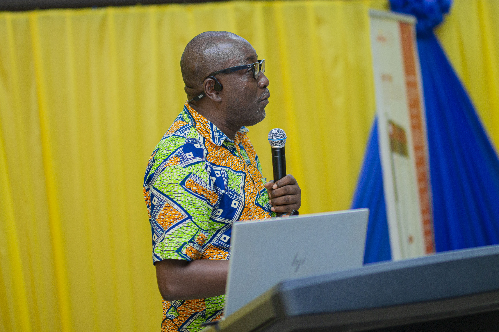
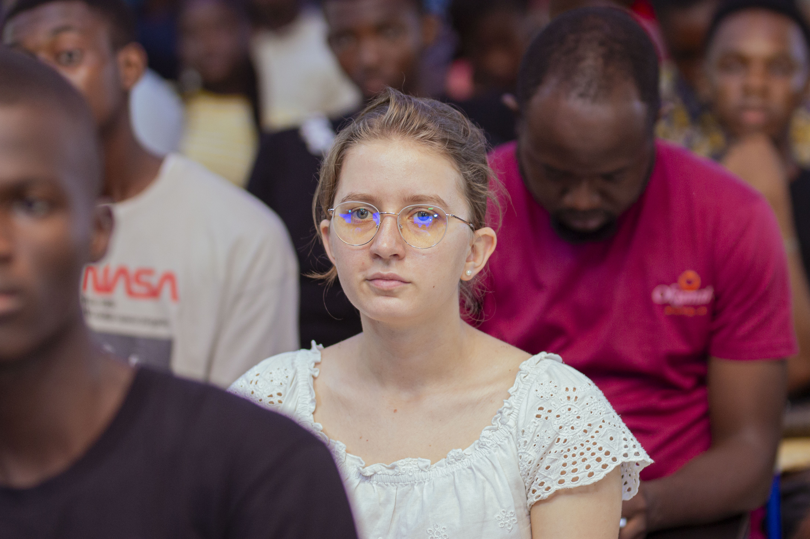
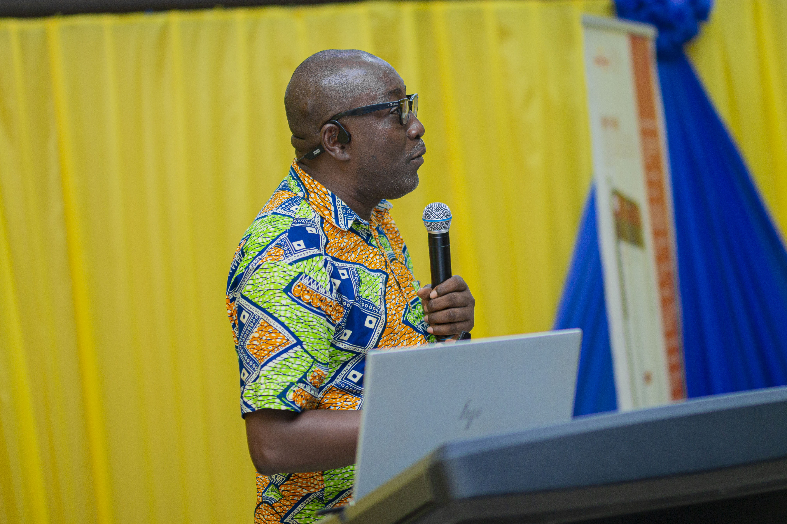
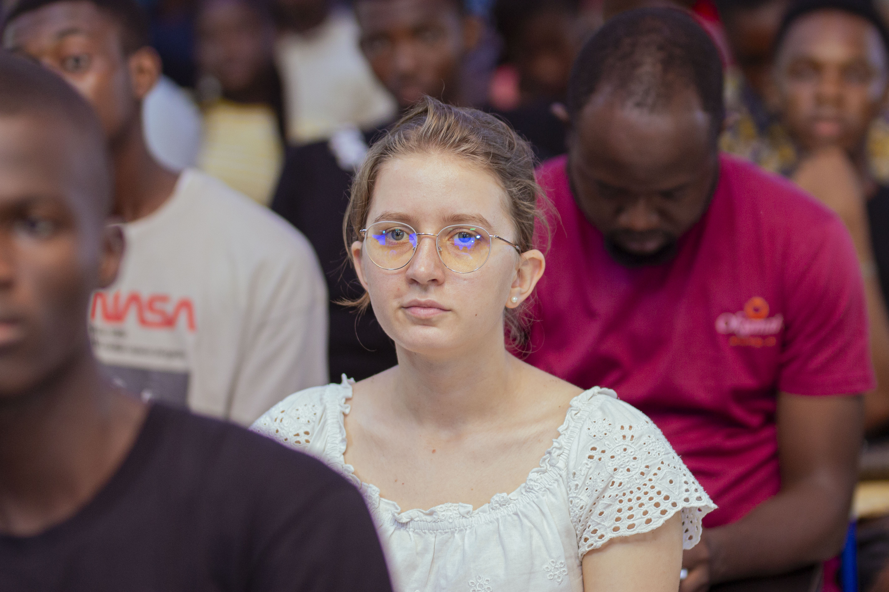
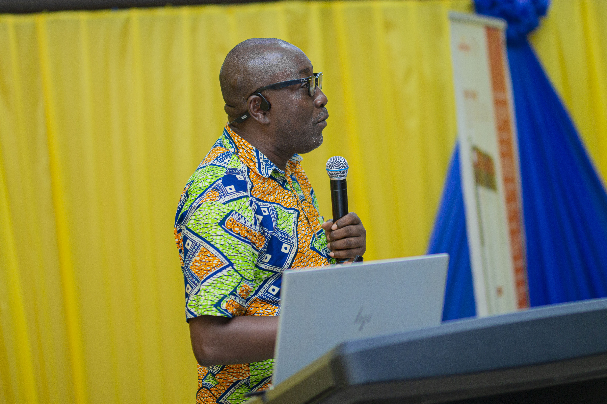
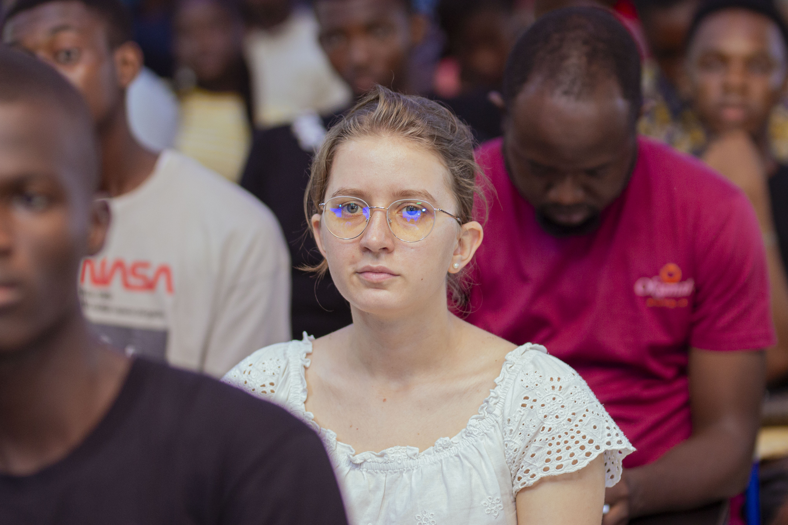
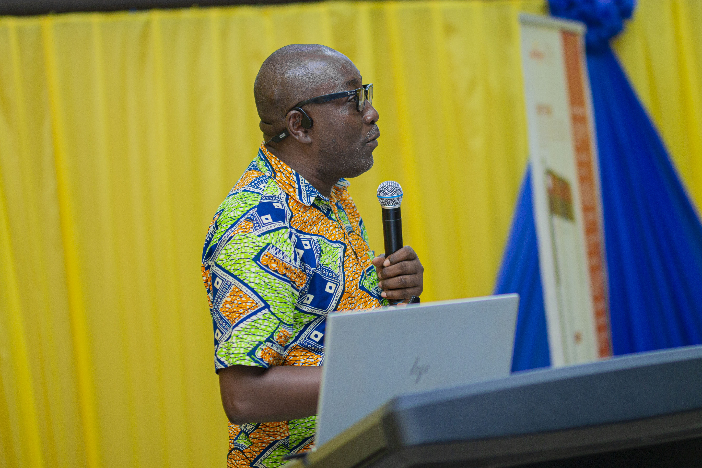
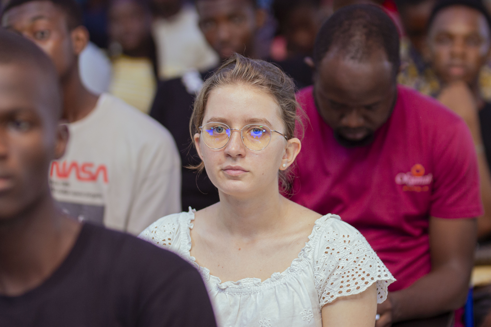

 



The Department currently runs one undergraduate programme in Computer
Science and three postgraduate programmes in Computer Science,
Information Technology, and Cyber Security and
Digital Forensic. The Department also runs parallel programmes. In
today's rapidly changing world, maintaining global competitiveness
requires the talents of a well-rounded,
holistic individual with technical knowledge and business acumen to
address challenging issues. The Computer Science Department is unique
in developing skills in Information Technology.
Welcome to the Department.
Established in 1977, the Department of Computer Science in
KNUST serves as a center for computing education and research at both
the undergraduate and graduate levels. There are strong research
groups focusing on areas such as Artificial Intelligence, Cyber
Security, Information Systems, Computer theory and Scientific
computing, and Software Engineering. The goal of these groups is to
use technology
as a means to address national and international issues and to foster
national development. Additionally, there is a
strong emphasis on interdisciplinary and transnational research on
applications
that encourages basic and advanced research.
The Department of Computer Science is one of the five departments of
the
Faculty of Physical and Computational Sciences of the College of
Science.The Department started with a 1-year certificate course in
Data Processing which has currently been stopped. Many years down the
line, the Department now runs a 4 -year degree programme in Computer
Science. The Department was the first Department in the country
to start a degree programme in Computer Science and this has been
recognized by the government through the Ministry of Communication. As
such, in late 2007, the Department was presented with an award during
the first Information Communication and Technology Award night.